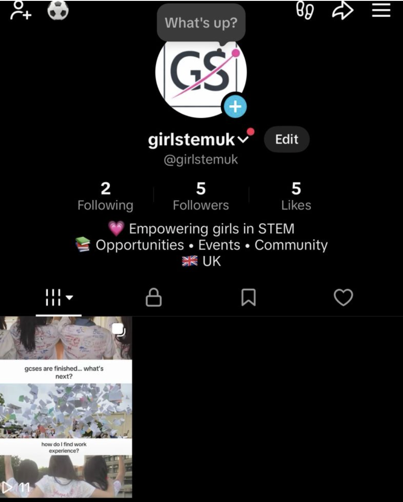

Networking events
We bring female students together through virtual and in-person events designed for conversation, collaboration and community.
Student-ran non-profit network
A UK community bringing female students in STEM together to network, help each other, and receive practical support from the network.
Who we are
GirlSTEM UK Network exists to make STEM feel more connected, collaborative and accessible for female students. We create spaces where students can meet peers, share opportunities, build confidence, discover our magazine HerinvisibleHands, and ask for help without feeling alone in the process.
What we do
We bring female students together through virtual and in-person events designed for conversation, collaboration and community.
We support students with applications, personal statements, CV building and confidence around academic and career next steps.
We run symposiums that help students practise public speaking, present ideas and take part in competitions in a supportive setting.
We help students find guidance, encouragement and practical advice through the wider network and leadership team.
 AS
AS
Founder
Created GirlSTEM UK Network and oversees the organisation, its direction and the work happening across every team.
 AC
AC
Head Ambassador
Manages events and leads the Ambassador team, coordinating opportunities that bring students together across the network.
 AC
AC
Head Moderator
Protects member safety, supports community standards and makes sure everyone follows the network rules.
 LO
LO
Head Social Media Manager
Leads social media, posts and marketing, helping share GirlSTEM UK updates and opportunities online.
Latest news

New social platform
We have launched our TikTok to share STEM opportunities, event reminders, student advice and behind-the-scenes updates from the network.
How to join
Join as a member, ambassador or volunteer and help create a stronger community for female students in STEM.